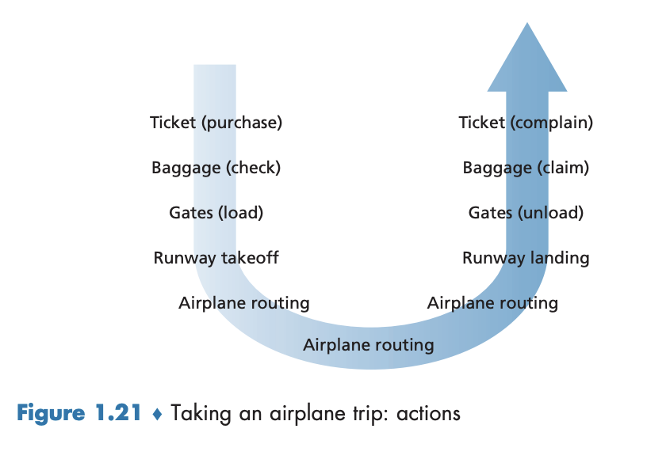
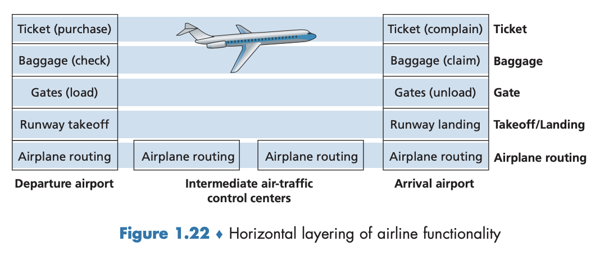
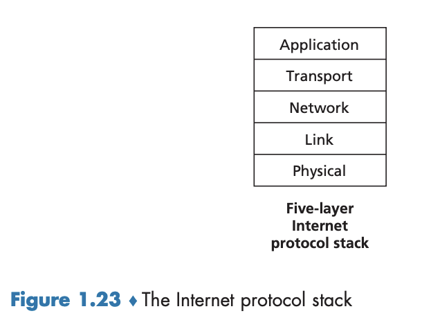
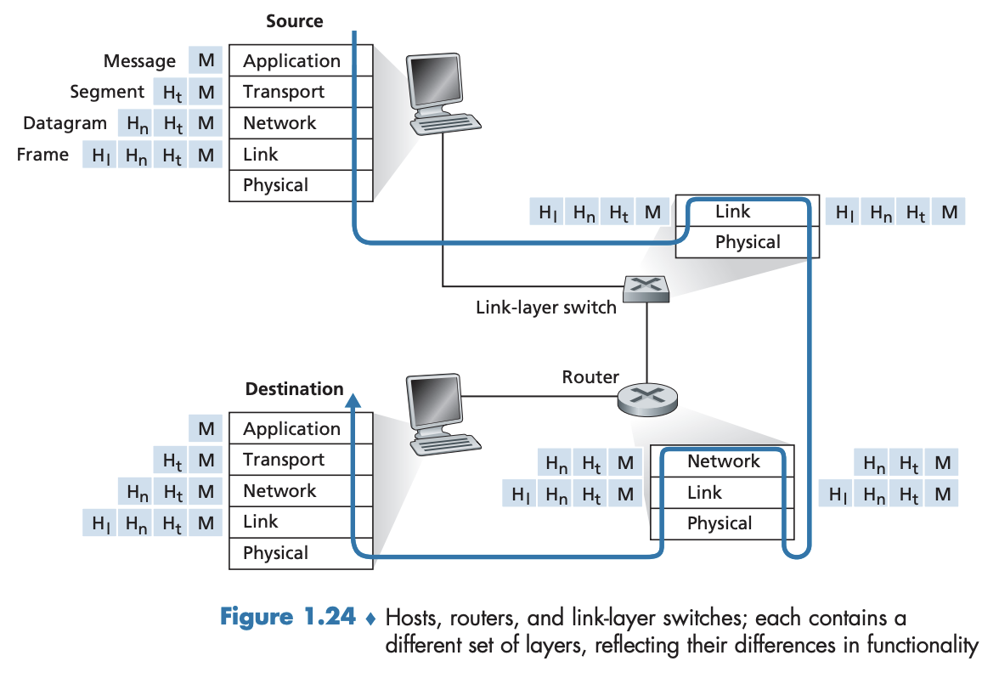

1.5 프로토콜 계층과 서비스 모델
인터넷을 구성하는 많은 요소(다양한 애플리케이션과 프로토콜, 여러 가지 종단 시스템과 종단 시스템과의 연결, 라우터, 다양한 링크 레벨의 매체)가 있음을 보았다. 상당히 복잡한 구조를 가짐에도 네트워크를 어떻게 조직하는지, 그것에 대한 논의가 왜 가능한지 살펴볼 것이다.
1.5.1 계층구조
다음 시나리오를 생각해보자.

누군가 우리에게 항공 시스템을 설명해달라고 요청한다고 상상해보자. 티켓 에이전트, 수하물 검색대, 탑승구 요원, 조종사, 비행기, 관제소 그리고 비행기를 라우팅하는 전 세계 시스템을 가진 복잡한 시스템을 설명하기 위해 우리는 그 구조를 어떻게 찾을 것인가? 이 시스템을 설명하는 한 방법은 우리가 비행기를 탈 때 취하는 일련의 행동을 설명하는 것이다. 비행기 티켓을 사고, 가방을 검사받고, 탑승구로 가고, 비행기에 타면, 비행기는 이륙하고 목적지로 향한다. 비행기가 착륙한 후, 탑승구를 통해 내리고 짐을 찾는다. 여행이 불편했다면 티켓 에이전트에게 항의한다.
다음 과정을 몇 가지 가능성을 추가하여 수평 방식으로 구조화 하면 아래 그림과 같다.

(1) 그 계층에서 어떤 동작을 취하고 (2) 그 계층 바로 아래 계층 서비스를 이용함으로써 서비스를 제공한다. 네트워크도 이와 같으며 계층 구조는 크고 복잡한 시스템 일수록 잘 정의된 특정 부분을 논의할 수 있게 해준다. 또한 계속해서 갱신되는 복잡하고 커다란 시스템일 경우, 시스템은 다른 요소에 영향을 주지 않고 서비스 구현을 변화시킬 수 있다.
프로토콜 계층화
네트워크 설계자는 프로토콜(프로토콜을 구현하는 네트워크 하드웨어와 소프트웨어)을 계층(layer) 으로 조직한다. 
- 각 프로토콜은 한 계층에 속한다.
- 한 계층이 상위 계층에 제공하는 서비스(service) 에 관심을 가지며 이것을 계층의 서비스 모델(service model) 이라고 한다.
- 각 계층은 계층 내부에서 어떤 동작을 수행하거나, 직접 하위 계층의 서비스를 사용한다.
- 프로토콜 계층은 소프트웨어, 하드웨어 또는 둘의 통합으로 구현할 수 있다.
- $n$계층 프로토콜은 네트워크를 구성하는 종단 시스템, 패킷 스위치, 그 외에 요소 사이에
분산되어 있다.- 각 네트워크 구성요소에는 하나의 $n$계층 프로토콜이 존재한다.
- 프로토콜 계층화는 개념과 구조 측면에서 이점이 있다.
- 시스템 구성요소에 대해 논의하기 위한 구조화된 방법을 제공한다.
- 모듈화는 시스템 구성요소의 갱신을 더 쉽게 해준다.
- 다양한 계층의 프로토콜을 모두 합하여 프로토콜 스택(protocol stack) 이라고 하며, 5개 계층으로 구성된다. → 우리는 톱다운 방식(top-down approach) 을 채택할 것이다.
애플리케이션 계층
네트워크 애플리케이션과 애플리케이션 계층 프로토콜이 있는 곳
- HTTP(웹 문서 요청과 전송 제공), SMTP(전자메일 전송 제공), FTP(두 종단 시스템 간의 파일 전송 제공) 같은 많은 프로토콜을 포함한다.
- 예를 들어 www.ietf.org 같은 이름을 32비트 네트워크 주소로 변환하는 네트워크 기능이 있다(이것을 도메인 네임 서버(domain name server, DNS)가 돕는다).
- 여러 종단 시스템에 분산되어 있어서 한 종단 시스템에 있는 애플리케이션이 다른 종단 시스템에 있는 애플리케이션과 정보 패킷을 교환하는 데 이 프로토콜을 사용한다.
- 이 정보 패킷을 메시지(message) 라고 부른다.
트랜스포트 계층
클라이언트와 서버 간에 애플리케이션 계층 메시지를 전송하는 서비스를 제공하는 곳
- TCP, UDP 두 가지 프로토콜이 있으며 이들은 애플리케이션 계층 메시지를 전달한다.
- TCP
- 애플리케이션에게 연결지향형 서비스를 제공한다.
- 목적지로의 애플리케이션 계층 메시지 전달 보장과 흐름 제어(송신자/수신자의 속도 일치)를 포함한다.
- 긴 메시지를 짧은 메시지로 나누고 혼잡 제어 기능을 제공하여 네트워크가 혼잡할 때 출발지의 전송률을 줄이게 한다.
- 애플리케이션에게 연결지향형 서비스를 제공한다.
- UDP
- 애플리케이션애 비연결형 서비스를 제공한다.
- 신뢰성, 흐름 제어, 혼잡 제어를 제공하지 않는 아주 간단한 서비스다.
- 애플리케이션애 비연결형 서비스를 제공한다.
- 트랜스포트 계층 패킷을 세그먼트(segment) 라고 한다.
네트워크 계층
한 호스트에서 다른 호스트로 패킷을 라우팅하는 곳
- 네트워크 계층의 패킷을 데이터그램(datagram) 이라고 한다.
- 출발지 호스트에서 인터넷 트랜스포트 계층 프로토콜(TCP 또는 UDP)은 트랜스포트 계층 세그먼트와 목적지 주소를 네트워크 계층으로 전달한다. 네트워크 계층은 목적지 호스트의 트랜스포트 계층으로 세그먼트를 운반하는 서비스를 제공한다.
- 오직 하나의 IP 프로토콜이 있고 네트워크 계층을 가진 모든 인터넷 요소는 IP 프로토콜을 수행해야만 한다.
- IP 데이터그램의 필드를 정의하며 종단 시스템과 라우터가 이 필드에 어떻게 동작하는지를 정의하는 프로토콜
- 출발지와 목적지 사이에서 데이터그램이 이동하는 경로를 결정하는 라우팅 프로토콜을 포함한다.
링크 계층
종단 간 경로 상의 한 노드(호스트 혹은 패킷 스위치)에서 다른 노드로 패킷(데이터그램)을 전달하는 곳
- 링크 계층 패킷을 프레임(frame) 이라고 한다.
- 링크 계층에서 제공하는 서비스는 그 링크에서 채용된 특정 링크 계층 프로토콜에 의해 결정된다.
- 이더넷, 와이파이, 케이블 접속 네트워크의 DOCSIS 프로토콜 등
- 네트워크 계층은 각기 다른 링크 계층 프로토콜로부터 다른 서비스를 제공받을 것이다.
물리 계층
프레임 내부의 각 비트를 한 노드에서 다음 노드로 이동시키는 기능을 하는 곳
- 이 계층의 프로토콜들은 링크에 의존하고 더 나아가 링크의 실제 전송 매체에 의존한다.
- 예: 꼬임쌍선, 단일 모드 광케이블
- 이더넷은 여러 가지 물리 계층 프로토콜을 갖고 있다.
- 예: 꼬임쌍선용, 동축케이블용, 광케이블용 등
- 각각의 경우에 비트는 다른 방식으로 링크 반대편으로 이동된다.
- 예: 꼬임쌍선용, 동축케이블용, 광케이블용 등
1.5.2 캡슐화

- 그림 1.24는 송신 종단 시스템의 프로토콜 스택 아래로 데이터를 보내며 중간의 링크 계층 스위치와 라우터의 프로토콜 스택을 위아래로 거치고 수신하는 종단 시스템의 프로토콜 스택 상위로 보내는 물리적 경로를 보여준다.
- 라우터와 링크 계층 스위치는 둘 다 패킷 교환기다.
- 종단 시스템과 비슷하게 라우터와 링크 계층 스위치는 네트워킹 하드웨어와 소프트웨어를 계층으로 구성하지만, 프로토콜 스택의 모든 계층을 구현하지는 않으며 일반적으로 하위계층을 구현한다.
- 링크 계층 스위치는 1, 2 계층을 구현하고 라우터는 1~3 계층을 구현한다.
- 예를 들어, 인터넷 라우터들이 IP 프로토콜(3계층 프로토콜)을 구현할 수는 있지만 링크 계층 스위치는 그럴 수 없다.
- 링크 계층 스위치는 IP 주소를 인식하지 못하지만 이더넷 주소 같은 2계층 주소를 인식할 수 있다.
- 호스트는 다섯 계층 모두를 구현한다.
- 인터넷 구조가 네트워크의 ’가장자리’에서 복잡성을 유지한다는 관점과 일치한다.
- 또한 그림 1.24는 캡슐화(encapsulation) 개념의 중요성을 보여준다.
- 애플리케이션 계층 메시지(application layer message): 송신 호스트에서 이것을 트랜스포트 계층으로 보내고 가장 간단한 경우에 여기서 메시지에 수신 측 트랜스포트 계층에서 사용될 추가 정보(트랜스포트 계층 헤더 정보라고 하며, 위 그림에서는 $H_t$)를 더한다.
- 트랜스포트 계층 세그먼트(transport-layer segment): 위 과정(애플리케이션 계층 메시지 + 트랜스포트 계층 헤더 정보)을 거친 것. 추가된 정보는 메시지를 적절한 애플리케이션으로 보내도록 하는 정보와 메시지들의 비트들이 변경되었는지 수신지가 결정하게 하는 오류 검출 비트를 포함한다.
- 네트워크 계층 데이터그램(network-layer datagram): 트랜스포트 계층 세그먼트 + 종단 시스템 주소와 동일한 헤더 정보(위 그림에서는 $H_n$).
- 링크 계층 프레임(link-layer frame): 네트워크 계층 데이터그램 + 링크 계층의 헤더 정보(위 그림에서는 $H_l$)
- 따라서 각 계층에서 패킷은 헤더 필드와 페이로드 필드(payload field) 라는 두 가지 형태의 필드를 갖는다.
- 페이로드는 일반적으로 그 계층 상위로부터의 패킷이다.
- 이것은 공중 우편 서비스를 통해 한 기업의 지부에서 다른 지부로 사내 메모를 보내는 것과 유사하다.
- 한 지부에 있는 앨리스가 다른 지부에 있는 밥에게 메모를 보내고자 한다고 가정하자.
- 이
메모는애플리케이션 계층 메시지와 유사하다.
- 이
- 앨리스는 밥의 이름과 부서를 적은 사내 봉투에 메모를 넣는다.
사내 봉투는트랜스포트 계층 세그먼트와 유사하다. 이것은 헤더 정보(밥의 이름과 부서 번호)를 포함하고 애플리케이션 계층 메시지(메모)를 캠슐화한다.
- 송신 지부 메일룸은 사내 봉투를 수신하면 이 사내 봉투를 다른 봉투, 즉 공중 우편 서비스를 통해 보내기에 적당한 봉투에 넣는다. 또한 송신 메일룸은 우편 봉투에 송신과 수신 지부의 우편주소를 적는다.
- 여기서
우편 봉투는데이터그램과 유사하다. 이것은 원래의 메시지(메모)를 캡술화하는 트랜스포트 계층 세그먼트(사내 봉투)를 캡슐화한다. 우편 서비스는 우편 봉투를 수신 지부 메일룸으로 전달한다.
- 여기서
- 여기서 캡슐화의 반대 과정이 시작된다. 메일룸은 사내 봉투를 꺼내서 밥에게 전달하고 밥은 사내 봉투에서 메모를 꺼낸다.
- 한 지부에 있는 앨리스가 다른 지부에 있는 밥에게 메모를 보내고자 한다고 가정하자.
- 캡슐화 과정은 위에서 기술한 것보다 더 복잡할 수 있다.
- 예를 들어, 큰 메시지는 여러 개의 트랜스포트 계층 세그먼트로 분할될 수 있다. 그리고 나서 수신 측에서 각 세그먼트는 분할된 데이터그램들로 재구성되어야 한다.